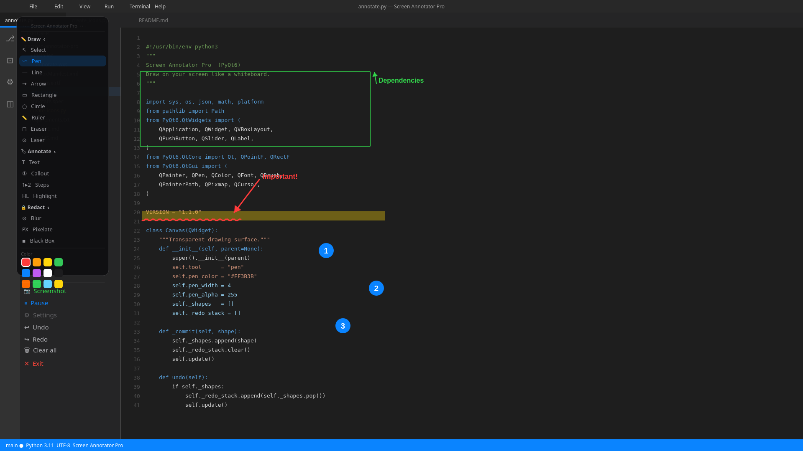

A fully transparent overlay over your entire desktop. Pick a tool, draw instantly. One click and it's gone — no trace left on your screen.

Freehand pen, lines, arrows, rectangles, and circles — all in any colour and opacity.
Cover sensitive content instantly with a blur or solid fill. Great for live demos and recordings.
Drop text labels anywhere on screen. Callout bubbles point exactly where you need them.
A glowing laser dot follows your cursor — perfect for directing attention during presentations.
Unlimited undo and redo. Ctrl+Z and Ctrl+Y work exactly like you'd expect.
The overlay spans every connected display. Crisp at 100%, 125%, 150%, 200%, 400% — every scale.
Capture any region, extract text with one click, and translate it to 20+ languages instantly.
One keyboard shortcut shows or hides the overlay. Fully customisable. Works from any app.
Launches silently to the system tray when Windows starts. Always ready when you need it.
Free download. No account. No subscription. Just install and go.